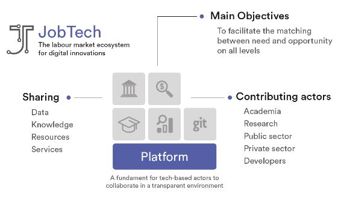

<div class="container">
    <div class="card">
    <div class="card-body">
      <h2 class="card-header">
        CREATING THE LABOUR MARKET OF THE FUTURE
      </h2>
      <br>
      <br>
      <h4 class="card-title">Jobtech</h4>
      <p class="card-text">
        Jobtech (job technology) is a collective term for technical innovation in the labour market sector.
        <br>Jobtech is characterized by collaboration between several actors in the labour market arena.
        <br>Rather than today having separate systems for job matching, we strive for a digital ecosystem where services from different vendors can flourish together making superior opportunities for jobseekers and employers
      </p>
      <h4 class="card-title">A digital ecosystem - let’s pool our resources</h4>
      <p class="card-text">
        In order to maximize the efficiency of matching and to stimulate the creation of more digital services, a common digital ecosystem is needed. One where all actors in the labour market share data and collaborate.
        <br>The sharing of common resources such as data provides better prerequisites to create and offer better end services.
        <br>The more actors who contribute to the ecosystem, private as well as from the public sector, the better matching and more beneficial effects can be generated.
        <br>Therefore, we would like to see more players in the labour market join the digital ecosystem, and work towards creating a community of interested parties to engage in the ecosystem.
      </p>
      <div class="card-img " >
        
      </div>
      <br>
      <p class="card-text">
        The Swedish Public Employment Service contributes to the ecosystem by offering a common platform, where all actors can easily contribute with their own data - as well as take part of others’.
        <br>
        We also contribute by making our own data available to others to use and by standing behind the initiative at the Jobtech Store site that provides access to all related digital services.
      </p>
      <h4 class="card-title">Jobtechdev.se - by developers for developers</h4>
      <p class="card-text">

        A prerequisite for the digital ecosystem is that developers and other actors can access data in a simple and easy way.
        <br>
        The Swedish Public Employment Service has developed a website that makes open data available in order to facilitate that need. The site Jobtech Developer, www.jobtechdev.se, which is primarily aimed at developers, presents all content that is available for download on the platform. Such content can be seen as "building blocks" for new service development.
      </p>
      <p class="card-text">
        A few examples of such building blocks:
      </p>
      <ul class="card-text">
        <li> MyData<br>
          We believe people want to own their personal data; no matter what digital service they use.
          We are quite sure that soon people will claim rights to easily move their data between digital services. We aim to develop a CV handler with a “edit once –update everywhere” concept.
          A concept that allows your CV data to be accessible from every digital service in the ecosystem, but only by the one person holding the key - namely you.
        </li>
        <li>
          The Ontology
          <br>When matching employers demand with jobseekers profile, it is crucial to use a common vocabulary describing professions, hard and soft skills.
          Therefore a skills taxonomy such as Yhe Ontology is one of the core components.
        </li>
        <li>
          All Jobs
          A data source that collects all advertised jobs from hundreds of job search sites to a data stream.
        </li>
        <li>
          API’s to the employment agency's vacancies and other open data
        </li>
      </ul>
      <p class="card-text">
        The labour market is going through a paradigm shift. Prior to the digitalisation era, the job matching was handled by a few players. Today, there are more than 300 matching services in the labour market, and they are increasing.
        <br>
        We have a growing gig economy with new digital gig platforms that convey and match short-term jobs. The trend of working together and collaborate in order to reach better results and bigger effects are growing all throughout the tech community.
        <br>
        Unique citizens require unique services. By collaborating, we enable the creation of niche solutions to specific needs - the future's labour market facilitated through future-oriented technology.
      </p>
      <h4 class="card-title">Jobtech Store - a marketplace for all digital services</h4>
      <p class="card-text">
        In order to make it easier for employers and jobseekers we will provide an online catalog for the digital services. We call it Jobtech Store.
        Jobtech Store is an initiative from the Public Employment Service - an open, neutral and common platform for all actors offering digital services such as matching, recruitment and education.
        <br>
        The platform makes it not only easier for citizens to find the right way in the growing range of job services and education. It also helps companies and organizations to appear and reach the right audience.
      </p>
      <h4 class="card-title">Open source as a strategy</h4>

      <p class="card-text">
        In order to make this happen, we believe it’s time to embrace open source as a baseline strategy. Why reinvent the wheel?
        We want you to be able to focus on creating the best solutions to the real problems instead.
        <br>
        Ease of integration and migration is an easy argument, as is the diversity of ideas created around community-shared challenges. The list can be made very long.
      </p>
      <h4 class="card-title">Where to start and how to contribute</h4>
      <p class="card-text">
        We want - and need - input from the community on this one! How do we create the best possible platform and community in order to make our vision come true? What do you want, and need?
      </p>
      <p class="card-text">
        How can private and public sector, individuals and organizations, collaborate, learn, share knowledge and adjust in order to best utilize the possibilities of new technology?
      </p>
      <h4 class="card-title"> Get in touch!</h4>
      <p class="card-text">
        Get in touch with us at <a href="mailto:contact@jobtechdev.se">Jobtechdev</a>
        <br>
        Do you want to contribute? Check out https://github.com/jobtechdev and https://github.com/magnumopuses.
        <br>
        <br>
        You might also find these articles interesting (in Swedish): https://chef.se/sponsrat/arbetsformedlingen-kompetensforsorjning-jobtech/ and https://www.voister.se/artikel/2018/09/oppen-kallkod-for-jobbsokare/ for some more information on our vision and what’s in our immediate pipeline.
      </p>
    </div>
  </div>
</div>
